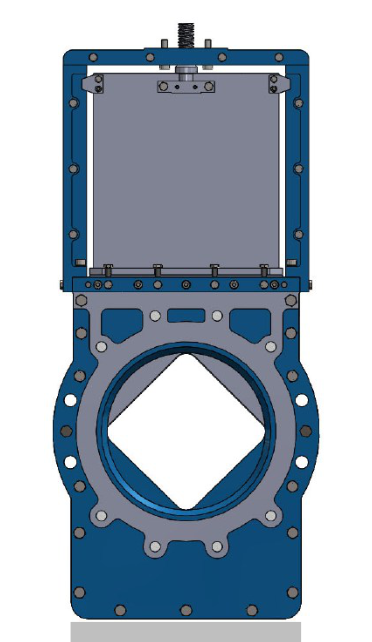

Diamond Valve
Model-based control of aeration air.
DN 100–400 | wafer connection | air service
Diamond Valve calculates the valve opening from a flow model, with PID adjustments to support precise aeration control.
- Intelligent multi-turn actuator with a 4–20 mA control signal.
- 380 V / 50 Hz actuator supply in the published configuration.
- Stainless steel valve plate with CF8 valve bodies.
- Designed for integration into precision aeration control systems.